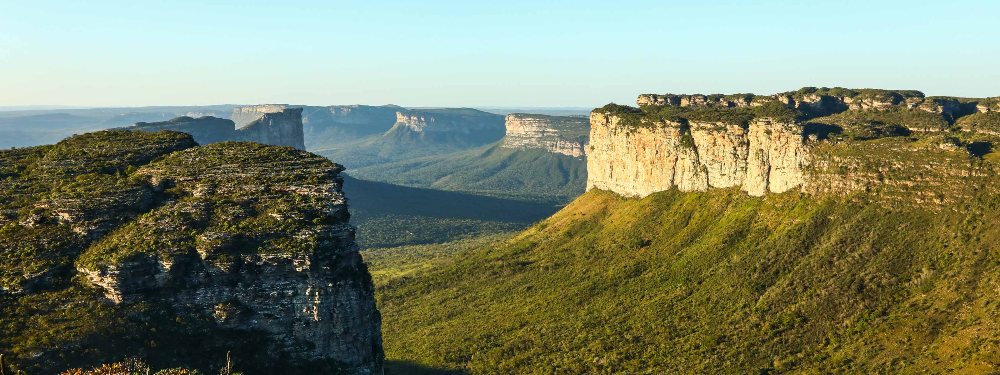

Explorando a Chapada Diamantina: Um Paraíso Natural
Escrito por: Caio Taveira
A Chapada Diamantina, localizada no coração da Bahia, é um dos destinos mais deslumbrantes do Brasil. Com suas paisagens montanhosas, cachoeiras impressionantes e trilhas desafiadoras, este é um lugar que encanta todos os amantes da natureza.
Minha história
Ol√°, aventureiros! üåç Hoje quero compartilhar com voc√™s a experi√™ncia incr√≠vel que tive ao explorar a Chapada Diamantina. Se voc√™ gosta de natureza, trilhas e cachoeiras, este √© um destino que voc√™ precisa conhecer!
As Belezas Naturais
A Chapada Diamantina é famosa por suas paisagens de tirar o fôlego. Entre os destaques estão a Cachoeira da Fumaça, uma das mais altas do Brasil, e o Morro do Pai Inácio, que oferece uma vista panorâmica espetacular. Cada trilha e cada cachoeira têm sua própria beleza única.
Atividades e Dicas
- Faça trilhas: Existem trilhas para todos os níveis de dificuldade, desde caminhadas leves até aventuras mais desafiadoras.
- Visite as cachoeiras: A Chapada é repleta de cachoeiras incríveis, cada uma com seu charme especial.
- Leve equipamento adequado: Roupas confortáveis, calçados apropriados para trilhas e bastante água são essenciais.
Conclusão
A Chapada Diamantina é um destino que proporciona uma conexão profunda com a natureza. Seja para explorar suas trilhas, se refrescar nas cachoeiras ou simplesmente admirar as paisagens, este é um lugar que todos deveriam visitar pelo menos uma vez na vida.